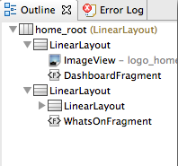

In this document
- SDK Tools Integration
- Code Editors
- Graphical Layout Editor
- Layout Factoring Support
- Updating the ADT Plugin
Related videos
See also
ADT (Android Developer Tools) is a plugin for Eclipse that provides a suite of tools that are integrated with the Eclipse IDE. It offers you access to many features that help you develop Android applications quickly. ADT provides GUI access to many of the command line SDK tools as well as a UI design tool for rapid prototyping, designing, and building of your application's user interface.
Because ADT is a plugin for Eclipse, you get the functionality of a well-established IDE, along with Android-specific features that are bundled with ADT. The following describes important features of Eclipse and ADT:
- Integrated Android project creation, building, packaging, installation, and debugging
- ADT integrates many development workflow tasks into Eclipse, making it easy for you to rapidly develop and test your Android applications.
- SDK Tools integration
- Many of the SDK tools are integrated into Eclipse's menus, perspectives, or as a part of background processes ran by ADT.
- Java programming language and XML editors
- The Java programming language editor contains common IDE features such as compile time syntax checking, auto-completion, and integrated documentation for the Android framework APIs. ADT also provides custom XML editors that let you edit Android-specific XML files in a form-based UI. A graphical layout editor lets you design user interfaces with a drag and drop interface.
- Integrated documentation for Android framework APIs
- You can access documentation by hovering over classes, methods, or variables.
You can find the most up-to-date and more detailed information about changes and new features on the Recent Changes page at the Android Tools Project site.
SDK Tools Integration
Need help designing icons?
The Android Asset Studio is a web-based tool that lets you generate icons from existing images, clipart, or text. It also generates the icons with different DPIs for different screen sizes and types.
Many of the tools that you can start or run from the command line are integrated into ADT. They include:
- Traceview: Allows you to profile your program's execution (Window > Open Perspective > Traceview).
- android: Provides access to
the Android SDK Manager and AVD Manager. Other
androidfeatures such as creating or updating projects (application and library) are integrated throughout the Eclipse IDE. - Hierarchy Viewer: Allows you to visualize your application's view hierarchy to find inefficiencies (Window > Open Perspective > Hierarchy Viewer).
- Pixel Perfect: Allows you to closely examine your UI to help with designing and building. (Window > Open Perspective > Pixel Perfect).
- DDMS: Provides debugging features including: screen capturing, thread and heap information, and logcat (Window > Open Perspective > DDMS).
- adb: Provides access to
a device from your development system. Some features of
adbare integrated into ADT such as project installation (Eclipse run menu), file transfer, device enumeration, and logcat (DDMS). You must access the more advanced features ofadb, such as shell commands, from the command line. - ProGuard: Allows code obfuscation, shrinking, and optimization. ADT integrates ProGuard as part of the build, if you enable it.
Code Editors
In addition to Eclipse's standard editor features, ADT provides custom XML editors to help you create and edit Android manifests, resources, menus, and layouts in a form-based or graphical mode. Double-clicking on an XML file in Eclipse's package explorer opens the appropriate XML editor.
Google I/O Session Video
View the segment on the XML editors for more information.
Note: You can edit Android-specific XML files (such as a layout or manifest) in both a graphical mode and also an XML markup mode. You can switch between these modes with the pair of tabs at the bottom of each custom XML editor.
In addition, some special file types that don't have custom editors, such as drawables, animations, and color files offer editing enhancements such as XML tag completion.
ADT provides the following custom, form-based XML editors:
- Graphical Layout Editor
- Edit and design your XML layout files with a drag and drop interface. The layout editor
renders your interface as well, offering you a preview as you design your layouts. This editor
is invoked when you open an XML file with a view declared (usually declared in
res/layout. For more information, see Graphical Layout Editor. - Android Manifest Editor
- Edit Android manifests with a simple graphical interface. This editor is invoked
when you open an
AndroidManifest.xmlfile. - Menu Editor
- Edit menu groups and items with a simple graphical interface. This editor is
invoked when you open an XML file with a
<menu>declared (usually located in theres/menufolder). - Resources Editor
- Edit resources with a simple graphical interface. This editor is invoked when
you open an XML file with a
<resources>tag declared. - XML Resources Editor
- Edit XML resources with a simple graphical interface. This editor is invoked when you open an XML file.
Resource linking enhancements
In addition to the normal code editing features of Eclipse, ADT provides enhancements to the Android development experience that allow you to quickly jump to declarations of various types of resources such as strings or layout files. You can access these enhancements by holding down the control key and clicking on the following items:
- A resource identifier, such as
R.id.button1, jumps to the XML definition of the view. - A declaration in the
R.javafile, such aspublic static final int Button01=0x7f050000", jumps to the corresponding XML definition. - An activity or service definition in your manifest, such as
<activity android:name=".TestActivity">, jumps to the corresponding Java class. You can jump from an activity definition (or service definition) into the corresponding Java class. - You can jump to any value definition (e.g.
@string:foo), regardless of which XML file "foo" is defined in. - Any file-based declaration, such as
@layout/bar, opens the file. - Non-XML resources, such as
@drawable/icon, launches Eclipse's default application for the given file type, which in this case is an image. @androidnamespace resources opens the resources found in the SDK install area.- Custom views in XML layouts, such as
<foo.bar.MyView></foo.bar.MyView>, or<view class="foo.bar.MyView">) jump to the corresponding custom view classes. - An XML attribute such as
@android:string/okorandroid.R.string.idin Java code opens the file that declares the strings. The XML tab opens when doing this, not the form-based editor.
Graphical Layout Editor
ADT provides many features to allow you to design and build your application's user interface. Many of these features are in the graphical layout editor, which you can access by opening one of your application's XML layout files in Eclipse.
The graphical layout editor is the main screen that you use to visually design and build your UI. It is split up into the following parts:
- Canvas
- In the middle of the editor is the canvas. It provides the rendered view of your
layout and supports dragging and dropping of UI widgets
directly from the palette. You can select the platform version used to render the items in
the canvas. Each platform version has its own look and feel, which might be the similar to or
radically different from another platform version. The canvas renders the appropriate look
and feel for the currently selected platform version.
This platform version does not need to be the same as the version that your
application targets.
The canvas also provides context-sensitive actions in the layout actions bar, such as adjusting layout margins and orientation. The layout actions bar displays available actions depending on the selected UI element in the canvas.
- Outline
- On the right side of the editor is the outline view. It displays a hierarchical view of your layout where you can do things such as reorder of views. The outline view exposes similar functionality as the canvas but displays your layout in an ordered list instead of a rendered preview.
- Palette
- On the left side of the editor is the palette. It provides a set of widgets that you can drag onto the canvas. The palette shows rendered previews of the widgets for easy lookup of desired UI widgets.
- Configuration Chooser
- At the top of the editor is the configuration chooser. It provides options to change a layout's rendering mode or screen type.
Figure 1. Graphical layout editor
Canvas and outline view
Google I/O Session Video
View the segment on the canvas and outline view and the layout actions bar for more information.
The canvas is the area where you can drag and drop UI widgets from the palette to design your layout. The canvas offers a rendered preview of your layout depending on factors such as the selected platform version, screen orientation, and currently selected theme that you specify in the configuration chooser. You can also drag and drop items into the outline view, which displays your layout in a hierarchical list. The outline view exposes much of the same functionality as the canvas but offers another method of organization that is beneficial for ordering and quickly selecting items. When you right-click a specific item in the canvas or outline view, you can access a context-sensitive menu that lets you modify the following attributes of the layout or view:
- View and layout properties
-
When you right-click a view or layout in the canvas or outline view, it brings up a
context-sensitive menu that lets you set things such as:
- ID of the view or layout
- Text of the view
- Layout width
- Layout height
- Properties such as alpha or clickable
- Animation preview and creation
-
If your layout or view is animated, you can preview the animation directly in the canvas
(when you select Android 3.0 or later as the platform version in the configuration chooser).
Right-click an item in the canvas and select Play Animation. If
animation is not associated with item, an option is available in the menu to create one.
View the segment on the animation features for more information.
- Extract as Include
- You can extract parts of a current layout into its own layout file, which you can then include in any layout with a single line of XML. See Layout Refactoring Support for more information.
Other canvas features
The canvas has additional features not available in the outline view:
- Edit views with the layout actions bar: The context-sensitive layout actions bar allows you to
edit how a view is laid out in your UI. The available actions depend on the currently
selected view and its parent layout. Some common actions include
toggling the fill mode of the view and specifying margins. For instance, if you select a
Buttonin aLinearLayout, you see actions related to theLinearLayout, such as a toggle to switch between horizontal and vertical layout, and a toggle to control whether its children are aligned along their text baseline. You will also see toolbar actions to control the individual layout attributes of the child, such as whether the child should stretch out to match its parent's width and height, a dropdown action to set the child's layout gravity, a button to open a margin editor, and a layout weight editor. - Edit a nested layout in its current context: If you are editing a layout that includes another layout, you can edit the included layout in the layout that included it.
- Preview drag and drop location: When you drag and drop a UI widget onto the canvas, ruler
markers appear showing you the approximate location of the UI widget depending on the
type of layout, such as
RelativeLayoutorLinearLayout. - Preview animations: You can preview view and layout animations when you select Android 2.1 or later for the platform version in the configuration bar.
- Render layouts in real-time: Layouts are rendered as accurately as possible according to the platform version, including the appropriate system and action bars.
- Support for fragments: Fragments can be rendered in the same screen as the layout that includes the fragments.
Figure 2. Canvas portion of the layout editor showing a rendered preview of an application
Figure 3. Outline view showing current layout's structure
Palette
Google I/O Session Video
View the segment on the palette for more information.
The palette contains the UI widgets that you can drag and drop onto the canvas and add to your layout. The pallete categorizes the widgets and shows rendered previews for easier lookup. The main features of the palette include:
- Different modes of rendered previews include: icons only, icons and text, tiny previews, small previews, and previews (rendered in real size). Previews are only available for layouts rendered with the latest revisions of Android 2.1 (API Level 7) or later.
- Custom views in your project or library projects are added under custom views category.
- Arrange UI widgets alphabetically or by category.
Figure 4. Palette showing available UI widgets
Configuration chooser
Google I/O Session Video
View the segment on the configuration chooser for more information.
The configuration chooser allows you to create and configure different configurations of a layout for different situations, such as one for landscape and one for portrait mode. You can set the following options for each configuration of a layout:
- Screen type combo box: Predefined screen settings for common device configurations. You can also create your own by selecting Custom....
- Screen orientation combo box: Portrait or Landscape screen orientation.
- Theme combo box: Predefined themes or a custom theme that you have created.
- Platform combo box: Platform version used to render the canvas and palette as well as displaying appropriate themes.
- Custom layout combo boxes: The locale, dock, and time of day combo boxes let you select different versions of the same layout depending on the device's current state. You can create a new version of a layout with the Create button.
Figure 5. Configuration chooser
Layout Refactoring Support
Google I/O Session Video
View the segment on refactoring features for a rundown of the more important refactoring features.
In both the graphical and XML layout editor, there are many features that help you quickly refactor your layouts. The following list describes the major refactoring support:
- Change layout
- This lets you change the layout on the fly and re-renders the canvas for you.
You can apply this refactoring to any layout and the layout is converted to the new type if
possible. In many cases, the opening and closing tags of the layout's XML element are changed
along with things such as ID attributes and their references. However, for some supported
types, ADT attempts to preserve the layout, such as changing a
LinearLayoutto aRelativeLayout. - Change widget
- This lets you select one or more widgets and converts them to a new widget type. In
addition to changing the element name, it also removes any
attributes that are not supported by the new widget type and adds in any mandatory attributes
required by the new widget type. If the current ID of a widget includes the
current widget type in its ID (such as a
<Button>widget named"button1"), then the ID is changed to match the new widget type and all references are updated. - Extract as include
- This lets you extract views inside of an existing layout into their own separate layout
file. An
includetag that points to the newly created layout file is inserted into the existing layout file. Right-click the view or layout and select Extract as Include.... - Extract string
- Extract strings from either XML or Java files into their own separate resource file.
- Extract style
- Extract style-related attributes from a layout and define them in a new
styles.xmlfile. You can select multiple views and this refactoring extracts all of the same styles into one style and assigns that style to all the views that use it. - Wrap-in container
- This lets you select one or more sibling elements and wrap them in a new container. This
can be applied to the root element as well, in which case the namespace declaration attributes
will be transferred to the new root. This refactoring also transfers
layout_attribute references to the new root, For example, suppose you have aRelativeLayout. If other widgets have layout constraints pointing to your widget, wrapping the widget causes these constraints to point to the parent instead. - Quick Assistant
- Provides refactoring suggestions depending on the current context. Press Ctrl-1 (or Cmd-1 on Mac) in an editor, and Eclipse provides a list of possible refactorings depending on the context. The Quick Assistant provides fast access to all of the above refactorings, where applicable. For example, if you are editing an XML value and decide you want to extract it out as a string, place the text cursor in the string and press Ctrl-1 to see the refactoring context menu.
Updating the ADT Plugin
From time to time, a new revision of the ADT Plugin becomes available, with new features and bug fixes. Generally, when a new revision of ADT is available, you should update to it as soon as convenient.
In some cases, a new revision of ADT will have a dependency on a specific revision of the Android SDK Tools. If such dependencies exist, you will need to update the SDK Tools package of the SDK after installing the new revision of ADT. To update the SDK Tools package, use the Android SDK Manager, as described in Exploring the SDK.
To learn about new features of each ADT revision and also any dependencies on the SDK Tools, see the listings in the Revisions section. To determine the version currently installed, open the Eclipse Installed Software window using Help > Software Updates and refer to the version listed for "Android Development Tools".
Follow the steps below to check whether an update is available and, if so, to install it.
- Select Help > Check for Updates.
If there are no updates available, a dialog will say so and you're done.
- If there are updates available, select Android DDMS, Android Development Tools, and Android Hierarchy Viewer, then click Next.
- In the Update Details dialog, click Next.
- Read and accept the license agreement and then click Finish. This will download and install the latest version of Android DDMS and Android Development Tools.
- Restart Eclipse.
If you encounter problems during the update, remove the existing ADT plugin from Eclipse, then perform a fresh installation, using the instructions for Installing the ADT Plugin.